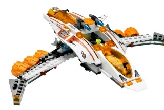
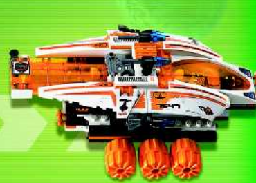

T083 · пакет дизайну юніта
MX-41 Switch Fighter
ПРИЙНЯТО ДИРЕКТОРОМ · 25.09.2026
T084 — НЕ РОЗПОЧАТО
Production Design Target


Видимі адаптації: видимої зміни зовнішності немає. Під час ігрової трансформації корпус лишається з’єднаним; нові деталі не додаються.
Прийняте рішення
Затверджено обидві конфігурації та пропорції LEGO 7647 без видимих змін зовнішності.
Сторінка LEGO 7647 · Офіційна інструкція PDF, стор. 15–64 · Маніфест джерел і контрольні суми · Design Spec.
Технічні деталі
- Stable ID:
unit.astronauts.mx41_switch_fighter. - Статус пакета: прийнято директором 2026-09-25; T084 ще не розпочато.
- У T084 перевірити безперервне з’єднання корпуса, шарніри, LOD і читабельність камери.
- Гілка:
codex/m85-t083; локальні зміни збережені.